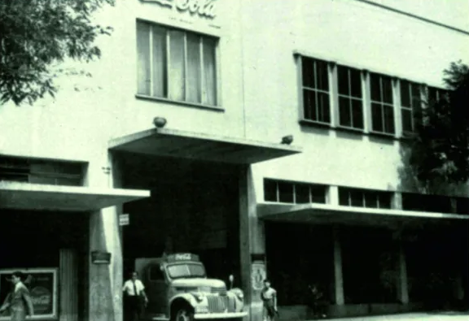

Nuestra Compañía
Coca-Cola nació en 1886 y desde entonces su camino ha estado marcado por la misma pasión y compromiso de inspirar al mundo, crear valor y hacer una diferencia positiva en la vida de las personas y las comunidades en las que opera. En Argentina estamos presentes desde 1942, donde junto a nuestros socios embotelladores Coca-Cola FEMSA, Reginald Lee, Arca Continental y Coca-Cola Andina, consolidamos una extensa y diversa cadena de valor que emplea a más de 172.000 personas de manera directa e indirecta e incluye, entre otros, a productores agropecuarios, choferes, operarios, repositores y almaceneros.
Apoyo a Kioscos y Almacenes
Estemos Abiertos es la iniciativa del Sistema Coca-Cola en Argentina para brindar apoyo económico, provisión de elementos de bioseguridad y asistencia comercial a kioscos, almacenes y autoservicios de todo el país. Como contrapartida por haber recibido la ayuda económica de Estemos Abiertos, el programa invita a los comerciantes a que sean parte de una cadena de favores y devuelvan algo de lo que recibieron con un acto solidario en sus barrios, que puede tener la forma de donación de productos, trabajo comunitario o aquello que sume a su comunidad.